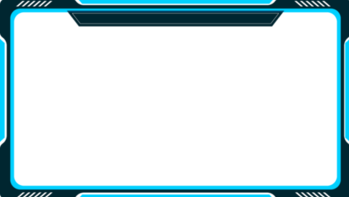

My Projects
I love to make things using the skills I've learned. Please take a look! You can also jump to a project about each subject below:

Rhythm Game - Piano Tiles on the DE1-SoC
A Rhythm Game similar to Piano Tiles made in the C language for the DE1-SoC Board.
Wrote real-time embedded systems code with strict timing constraints, where time complexity and efficiency was required for functionality. Designed multiple parallel modules for audio output, game events, and integrated them with peripheral input signals.
StuGIS - Usable and Responsive Mapping + Navigation
A GIS desktop app designed to make student life easier, coded in C++ for the Linux system.

From displaying and filtering key points, providing navigation, to finding an optimized path hitting many destinations, StuGIS can do it all. Collaborated with my team to develop the API, Worked on a constrained variant of the Traveling Salesman Problem, and single-handedly developed the UI.
Portfolio Website - About This Very Site
So, this is my web development project. I made this to neatly display my skills and experiences while showing off my web dev skills. I had a ton of fun making this website, and it's sparked my passion for front-end development!
I built this site using mainly HTML and CSS. I also plan on implementing elements with JavaScript after I learn it, so stay tuned.
Also check out the Hobbies & Interests section, where I try to get more creative with the styling!
